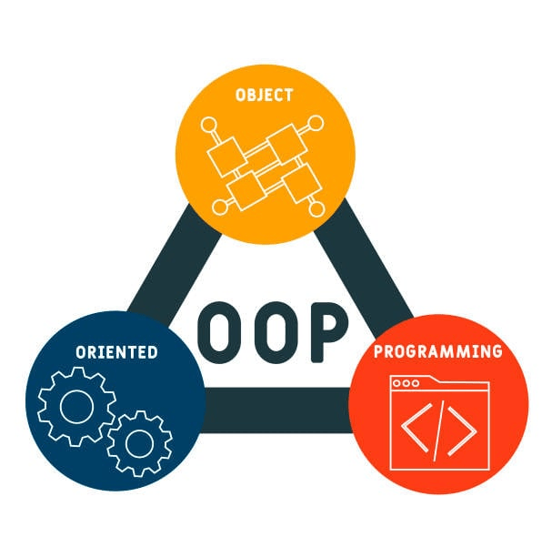

Ave. cor. Chanyungco St., Sta. Elena, Marikina City
GROUP 1
GROUP1
LEADER:JOHN MARK PARABAS
MEMBERS:
JOASH CADAO
ANGELICA MARTINEZ
JOHN EDMAR LUCERO
KYLA ANGELA OSCARES
REDEL TOLEDO
CLARENCE SAUL
TERMINOLOGIES
JOHN MARK PARABAS PYHTON-is a popular and beginner-friendly
programming language used for various applications, including web development, software creation,
and automation. It is a general-purpose language, meaning it is not limited to specific tasks and
can be used in many fields, such as data analysis and machine learning. Its simplicity and versatility
have made it one of the most widely used programming languages today.
JOASH CADAO
C language- C is a powerful and efficient programming language used for system-level
and application development. It is widely used in operating systems, embedded systems,
game development, and database management due to its speed and direct memory access. With
its structured programming approach and portability, C remains a fundamental language in
computer science and software engineering.
JOHN EDMAR LUCERO LOOP-
is a of instructions that is continually repeated until a certain condition is reached.
ANGELICA MARTINEZ Microservices-A software architecture approach where an application is
broken down into small, independent services that communicate with each other.
KYLA ANGELA OSCARES Object-Oriented Programming-(OOP), which is a programming paradigm based
on the concept of "objects" that encapsulate data (attributes) and behavior (methods)
to structure code in a modular and reusable way.

CLARENCE SAUL SYNTAX ERROR-A syntax error is a mistake in code that breaks the rules of a
programming language, preventing it from running properly. It usually happens due to
incorrect punctuation, misspelled commands, or other formatting issues, causing an error
message to appear. To avoid syntax errors, programmers should follow language rules
carefully and use debugging tools or IDEs for easier troubleshooting.
REDEL TOLEDO TOKEN AUTHENTICATION-Authentication tokens are created by an authentication service
and contain information that enables a user to verify their identity without entering
login credentials. Tokens expire: When a user finishes their browsing session and logs
out of the service, the token they were granted is destroyed.
HYPERTEXT PREPROCESSOR PHP- is a server-side scripting language that is popular in web development. PHP is executed
on the server, which then gets translated into the client-side using HTML code.
Your web browser will then create an output.
CLOUD COMPUTING CLOUD COMPUTING-is the delivery of computing services—including servers, storage, databases,
networking, software, analytics, and intelligence—over the internet (“the cloud”) to offer
faster innovation, flexible resources, and economies of scale.
LOAD BALANCER A load balancer-a device that sits between the user and the server group and acts
as an invisible facilitator, ensuring that all resource servers are used equally.
 REDEL TOLEDO
REDEL TOLEDO HYPERTEXT PREPROCESSOR
HYPERTEXT PREPROCESSOR LOAD BALANCER
LOAD BALANCER